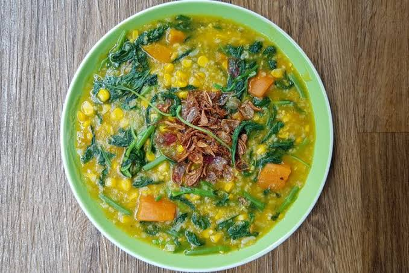

<< Daftar Resep
Kuliner Manado - Bubur Manado
Bubur Manado
Bahan |
Cara Membuat |
Tips |

Berikut resep membuat bubur manado yang bisa kamu coba di rumah
Bahan-bahan:
- Beras 1 Beras mangkok nasi
- 1.250 ml air
- labu kuning 200 gram dikukus
- 1 buah ubi kuning, dipotong dadu
- jagung 1 buah dipipil
- 1 ikat daun bayam, dirajang kasar
- 1 ikat daun kemangi
- 1 lembar daun kunyit
- 3 batang serai, digeprek
- 2 batang daun bawang, diiris halus
- 3 siung bawang putih, dicincang
- 1 sdm minyak
- 1/2 sdt garam
- 1 sdt kaldu bubuk
- 1/2 sdt merica
Bahan pelengkap:
- ikan asin
- sambal terasi
Cara membuat:
- Campurkan nasi, jagung, ubi, dan serai. Tambahkan 1.000 ml air. Masak sampai ubi empuk
- Lumatkan labu kukus. Sisihkan
- Tumis bawang putih sampai layu. Sisihkan
- Tambahkan 250 ml air dan labu yang dilumatkan pada bubur. Masukkan daun bayam, daun kunyit, garam, kaldu bubuk, dan merica. Koreksi rasa
- Tambahkan bawang putih dan daun kemangi. Aduk rata
- Sajikan bubur dengan bahan pelengkap
Kembali Keatas
<< Daftar Resep